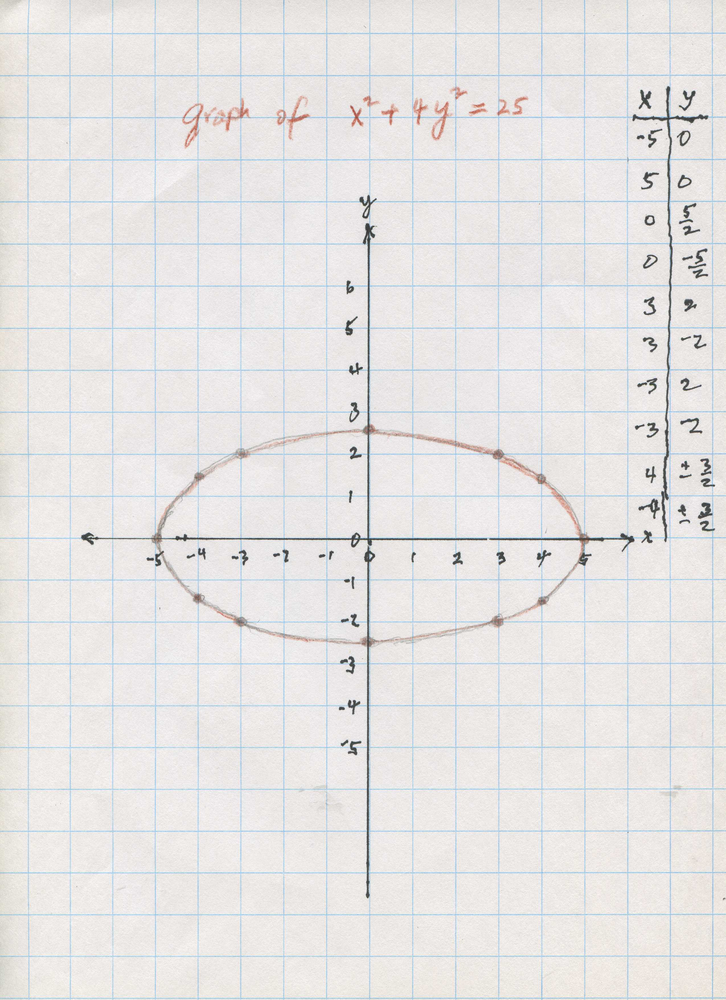

Donna , a 4th grader, changed her original equation and got surprising graphs!
Don asked Donna to graph x2 + y2 = 25; she found (0,5) and (5,0) that worked, then found she could use negatives as well. She realized quickly that the graph was a circle, with radius 5.
Don asked Donna to change the equation some way, then graph the new equation. She chose x2 + y3 = 25, which really didn't surprise Don, and was a great choice. Why? Because Don wasn't sure what the graph would look like! This took finding the cube root of a number on the calculator, which Donna was able to do. She realized that the graph was symmetrical over the y-axis.
They graphed Donna's equation x2 + y3 = 25 in Derive, below:
Don asked Donna to change the equation again some way, then graph this new equation. She chose x3 + y2 = 25 . It got more interesting!

The interesting thing Donna did, without knowing it, was to create the mathematical inverse of the graph of x2 + y3 = 25, in x3 + y2 = 25. In other words she interchanged the x and y, and these graphs are mirror images of each other in the line y=x! Rachael and Don graphed Donna's 3 graphs and y=x in Derive all on the same graph below:

Great job Donna !!!
On the same graph paper, plot 7 graphs of x2 + k*y2 = 25 for values of k = 4, 1, 1/4, 0, -1/4, -1, -4/chapter 6
For example, if k=4, the equation to graph is x2 + 4*y2 = 25. The graph looks like this:

Notice, the graph is an ellipse, the semi-major axis is 5, the semi-minor axis is 5/2, and the foci are at (2.5*Sqrt(3),0) and (-2.5*sqrt(3),0). Now you make the other graphs using the other values of k.
Can you write an equation for the path the handle of the genuine WHAT'S IT makes as it goes around?